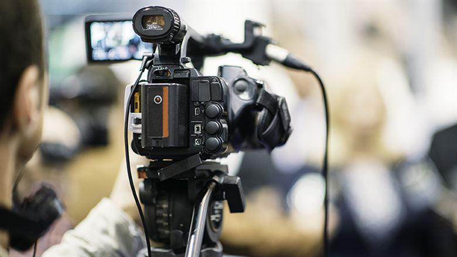
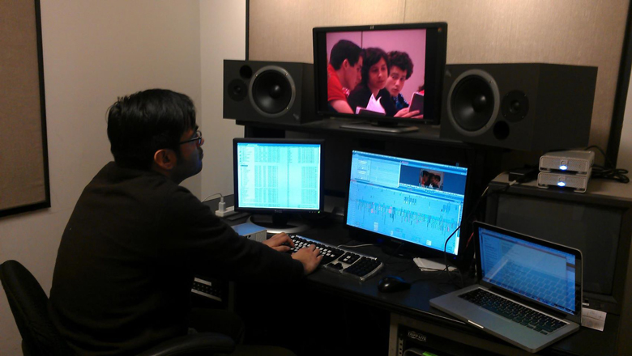

~Production~
"we make you a super star"
EVERY product WE MAKE IS DIFFERENT, AS IS EVERY CLIENT. WE WILL DESIGN AN APPROACH THAT FITS YOUR NEEDS AND ENGAGES YOUR AUDIENCE. THIS IS HOW...
STEP 1 - CONSULTATION & PLANNING:
Digital content production is a two way process and we want to work closely with our clients to ensure we deliver above and beyond what they expect from our services. We like to meet, drink a coffee and quickly set about understanding exactly what you're trying to communicate and who your target audience is.
STEP 2 - PRODUCTION:
Using fancy-pants cameras and bags of gadgets we have all the equipment and expertise to capture stunning footage in full 4k and HD. Whether shooting a carefully scripted narrative or responding to unpredictable events we bring our videos to life with subtle pieces of visual trickery to ensure dynamic and stimulating imagery.
STEP 3 - POST PRODUCTION & EDITING:
This is where we add the secret ingredients and create bespoke content, tailored to your requirements. We ensure all of the visual elements are in keeping with your existing branding and support your identity, from simple logos to stunning animated graphics and typography.
We can be involved as much or as little as you need.

